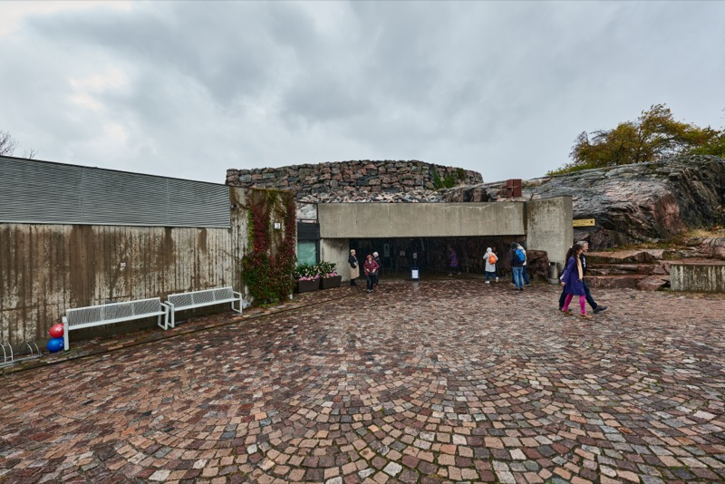
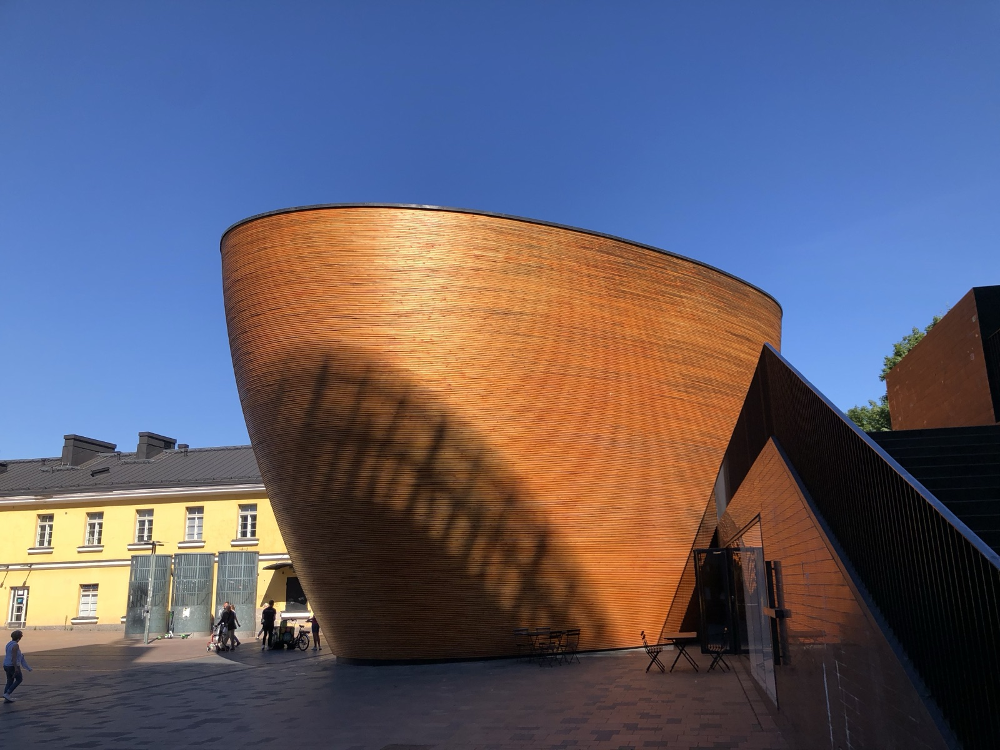
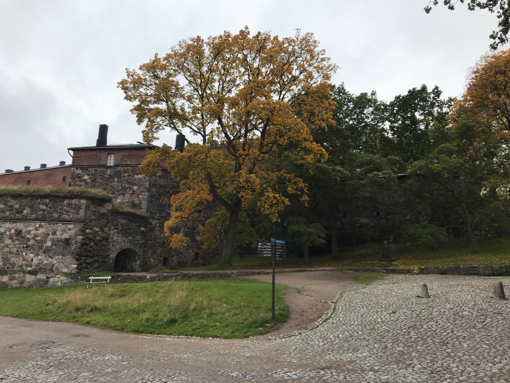
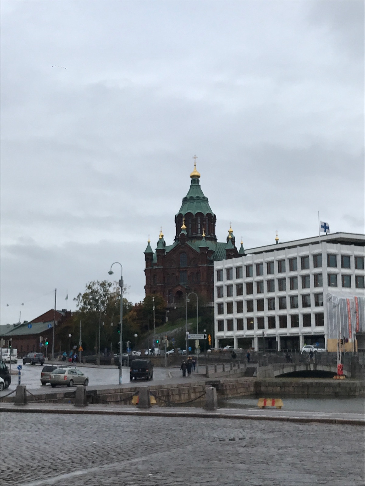

S-Market — dedicated GF sections with yellow "G" labels
K-Supermarket — Schär, Fazer, and Moilas brands
Prisma — largest selection, great for stocking up
Tips
Finland has one of the world's highest celiac prevalence rates (~2%). Most restaurant menus mark GF items with "G". EU labeling laws require "gluteeniton" on certified products (<20ppm). The Finnish Coeliac Society (Keliakialiitto) maintains a certified list of GF restaurants.
Score Breakdown
Dedicated GF restaurants
Menu labeling
Staff knowledge & safety
Density of GF dining
Grocery availability
8/10Overall GF Score
Easy
GF Friendly Restaurants
3 open · 2 closed
GF Score 5/5 4/5 2/5 Closed Hotel
Keliapuoti Leena Raitisto
100% GF
Dedicated GF Bakery
Went here
GF Score
Safety Notes
100% dedicated gluten-free bakery — completely safe for celiacs. The only exclusively GF shop in Helsinki.
What to Order
Fresh GF breads, pastries, Karelian pies, cinnamon buns, cakes. Many items also dairy-free and vegan.
Has GF options marked on menu but NOT a dedicated GF facility. Cross-contamination risk — shared prep space, same butter for normal and GF items. Not recommended for strict celiacs.
What to Order
Dark chocolate cookies, carrot cake, rice pie — verify prep before ordering.
Had excellent GF buns and Beyond Burger options. Lönnrotinkatu location now closed.
Location
Lönnrotinkatu, Helsinki
Ristorante Pizzeria Dennis Bulevardi
Looks to be Closed
Italian
Note
Entire Dennis chain went bankrupt November 2022.
Location
Bulevardi, Helsinki
Getting Around
Tram
Extensive network of 13+ routes covering central Helsinki. Best way to get around the city center. Runs frequently from early morning to late evening.
HSL day pass from €9
Metro
Two lines connecting east-west. Useful for reaching further neighborhoods.
Same HSL ticket as trams
Ferry
HSL ferries to Suomenlinna (15 min from Market Square). Included in HSL day pass. Also connects to nearby islands.
Suomenlinna ferry every 15–20 min
Train
Airport to city center in ~30 min via P/I lines. Commuter trains for day trips (e.g. to Tampere).
Airport train every 10 min
Transit Tip
Buy an HSL day pass — it covers trams, metro, buses, ferries (including Suomenlinna), and trains within Helsinki. Available on the HSL app.
Landmarks & Must-See Spots
4 spots
Temppeliaukion Church (Rock Church)
Historic
A stunning church carved directly into solid rock, with a copper dome and 180 skylights. The acoustics are incredible, and the raw rock walls give it an otherworldly atmosphere.
Lutherinkatu 3
Went here

Kamppi Chapel
Historic
Known as the Chapel of Silence, this curved wooden structure in the middle of bustling Kamppi is a place for quiet contemplation. Striking minimalist architecture.
Simonkatu 7, Kamppi
Traveler recommended

Suomenlinna — The Fortress of Finland
Historic
One of the world's largest sea fortresses, spanning 6 islands. A UNESCO World Heritage Site since 1991. Take the 15-minute ferry from Market Square to explore centuries of military history, beautiful coastal paths, and autumn foliage.
Suomenlinna Island (15 min ferry from Market Square)
Went here

Market Square (Kauppatori)
Market
Helsinki's bustling open-air market on the harbor. Fresh fish, local produce, handmade crafts, and Finnish street food. The perfect starting point for exploring the city or catching the Suomenlinna ferry.
Kauppatori, South Harbour
Went here

Neighborhoods
Punavuori
Design & Dining
Helsinki's creative heartbeat — fashion boutiques, contemporary art galleries, Finnish interior design showrooms, and some of the city's best restaurants.
Kallio
Local & Alternative
Former working-class district turned hipster haven. Vintage shops, craft coffee, vegan bistros, Finnish saunas, and the historic Hakaniemi Market Hall.
Kaivopuisto
Waterfront & Parks
Picturesque upscale residential area with stunning sea views, waterfront promenades, Art Nouveau buildings, and the 16-hectare Kaivopuisto Park overlooking Suomenlinna.
Kamppi
Shopping & Central
Helsinki's commercial core with major shopping centers, the striking Kamppi Chapel, and easy access to trams and metro. A convenient base for exploring.
Eira
Quiet & Seaside
Elegant residential neighborhood with beautiful villas, peaceful tree-lined streets, and easy access to the waterfront. A calm retreat from the city center.
Things to Do
Tours & Experiences
Nuuksio Reindeer Park
Paid
Meet and feed reindeer at the southernmost reindeer park in Finland, set in Nuuksio National Park. Includes a traditional Sámi campfire experience with coffee and tea.
Award-winning public sauna by the Baltic Sea, named one of Time Magazine's “World 100 Greatest Places.” Traditional wood-burning and smoke saunas with sea swimming.
Celiac dining card in FinnishShows “Sairastan keliakiaa” and lists unsafe ingredients. Many Helsinki restaurants understand English, but the card ensures nothing gets lost in translation.
Essential
Portable GF snack stashLong ferry rides and day trips (like Nuuksio) have limited GF options. Pack bars, crackers, and dried fruit.
Essential
Reusable water bottleHelsinki tap water is excellent and freely available at public fountains.
Essential
Power adapter (Type C/F)Standard European two-pin plugs. Most hotels have USB ports but bring an adapter for chargers.
Finland
Finnish celiac society appKeliakialiitto maintains a list of certified GF-friendly restaurants. Download before your trip.
Finland
Waterproof jacket with hoodOctober brings rain and wind off the Baltic. Suomenlinna and the harbor are exposed.
Helsinki
Warm layers (fleece + thermal base)October temperatures range 3–10°C. Wind chill near the water makes it feel colder.
Helsinki
Comfortable waterproof shoesCobblestones at Suomenlinna and Market Square get slippery when wet.
Helsinki
Compact umbrellaQuick rain showers are common in autumn, even between sunny spells.
Helsinki
Sauna towel and swimsuitYou'll want to try a Finnish sauna (Löyly or similar). Some provide towels, but bringing your own is safer.
Helsinki
Travel Tips
The HSL day pass pays for itself quickly — trams, metro, buses, and the Suomenlinna ferry are all included.
Helsinki's tap water is among the cleanest in the world. Skip the bottled water.
Most restaurants label GF items with “G” on the menu — look for it before asking.
Keliapuoti in Hakaniemi Market Hall is a must-visit for celiacs — stock up on GF bread and pastries for the trip.
Suomenlinna is worth a full half-day. Bring snacks — the cafe options on the island have limited GF choices.
Tipping is not expected in Finland, but rounding up is appreciated for good service.
October brings beautiful autumn foliage but pack for rain and wind. The weather changes fast.
What I'd Do Differently
I'd book Nuuksio Reindeer Park earlier — it has limited Saturday-only availability in autumn and I missed it.
I'd spend more time in Kallio — the Hakaniemi Market Hall area has great character and I rushed through it.